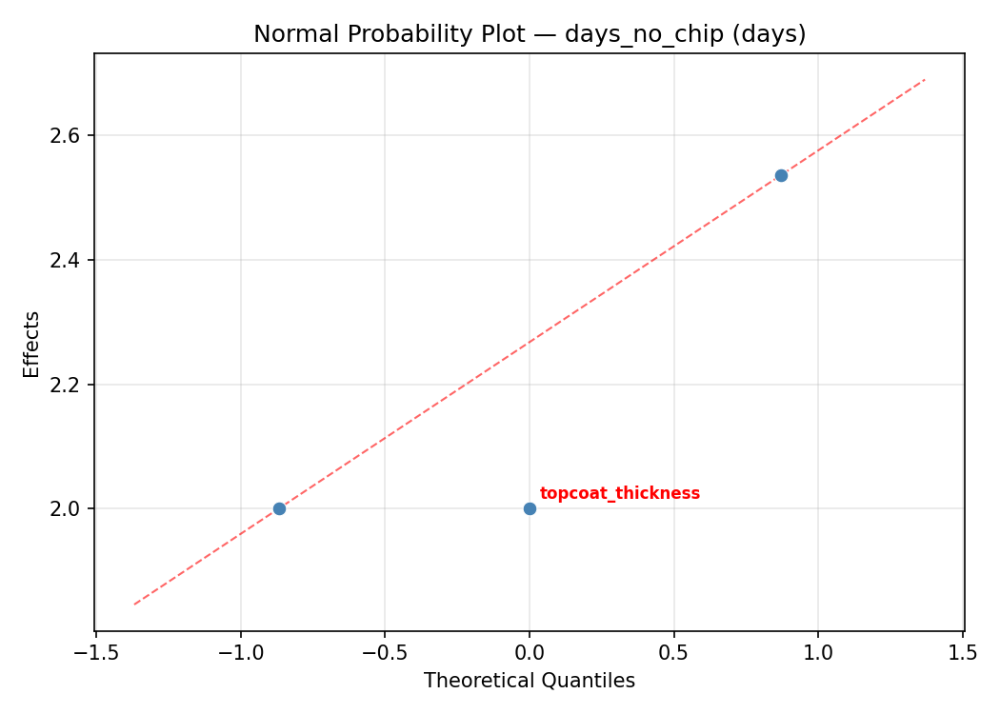
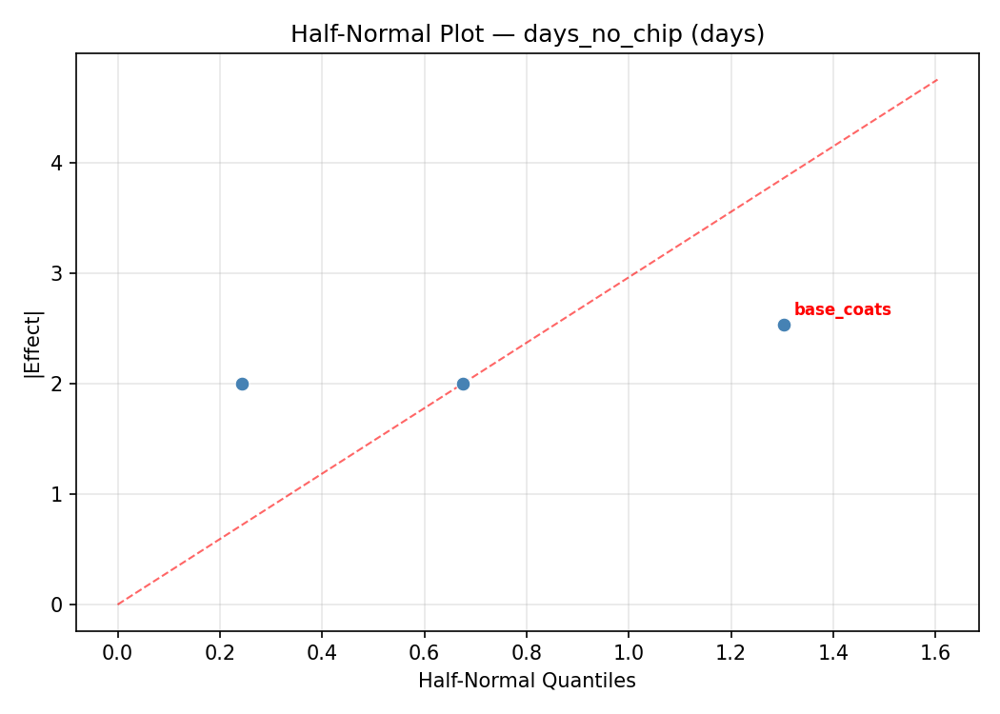
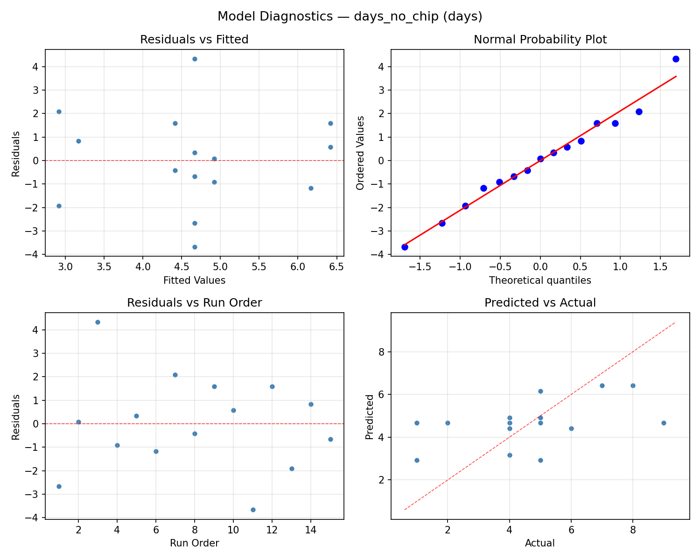
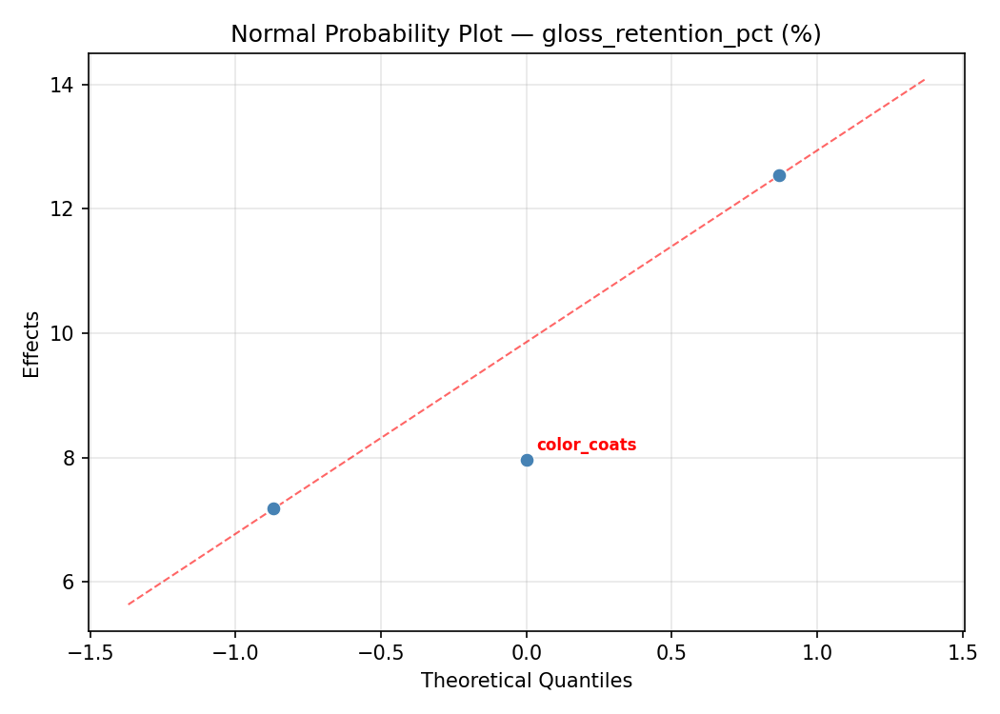
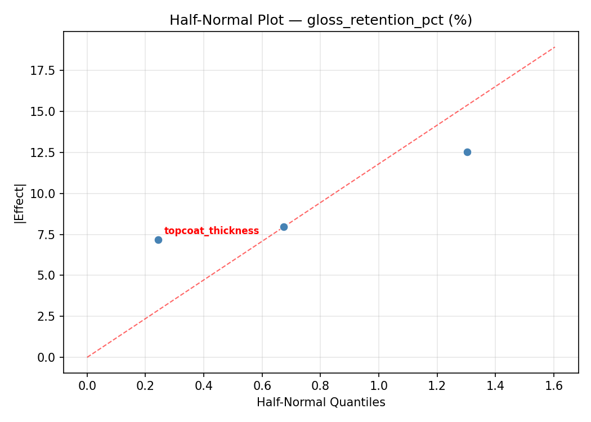
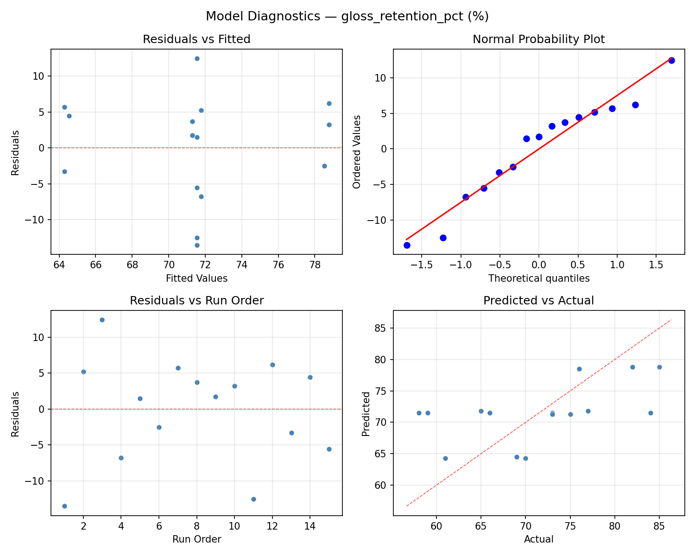

Summary
This experiment investigates nail polish durability. Box-Behnken design to maximize chip resistance and gloss retention by tuning base coat thickness, color coat layers, and top coat formula.
The design varies 3 factors: base coats (coats), ranging from 1 to 2, color coats (coats), ranging from 1 to 3, and topcoat thickness (mils), ranging from 1 to 3. The goal is to optimize 2 responses: days no chip (days) (maximize) and gloss retention pct (%) (maximize). Fixed conditions held constant across all runs include prep = dehydrator, cure = air_dry.
A Box-Behnken design was chosen because it efficiently fits quadratic models with 3 continuous factors while avoiding extreme corner combinations — requiring only 15 runs instead of the 8 needed for a full factorial at two levels.
Quadratic response surface models were fitted to capture potential curvature and factor interactions. The RSM contour plots below visualize how pairs of factors jointly affect each response.
Key Findings
For days no chip, the most influential factors were color coats (42.9%), base coats (41.0%), topcoat thickness (16.2%). The best observed value was 9.0 (at base coats = 1.5, color coats = 1, topcoat thickness = 3).
For gloss retention pct, the most influential factors were color coats (51.3%), base coats (32.2%), topcoat thickness (16.6%). The best observed value was 85.0 (at base coats = 1.5, color coats = 2, topcoat thickness = 2).
Recommended Next Steps
- Run confirmation experiments at the predicted optimal settings to validate the model.
- Consider whether any fixed factors should be varied in a future study.
Experimental Setup
Factors
| Factor | Low | High | Unit |
|---|
base_coats | 1 | 2 | coats |
color_coats | 1 | 3 | coats |
topcoat_thickness | 1 | 3 | mils |
Fixed: prep = dehydrator, cure = air_dry
Responses
| Response | Direction | Unit |
|---|
days_no_chip | ↑ maximize | days |
gloss_retention_pct | ↑ maximize | % |
Configuration
{
"metadata": {
"name": "Nail Polish Durability",
"description": "Box-Behnken design to maximize chip resistance and gloss retention by tuning base coat thickness, color coat layers, and top coat formula"
},
"factors": [
{
"name": "base_coats",
"levels": [
"1",
"2"
],
"type": "continuous",
"unit": "coats"
},
{
"name": "color_coats",
"levels": [
"1",
"3"
],
"type": "continuous",
"unit": "coats"
},
{
"name": "topcoat_thickness",
"levels": [
"1",
"3"
],
"type": "continuous",
"unit": "mils"
}
],
"fixed_factors": {
"prep": "dehydrator",
"cure": "air_dry"
},
"responses": [
{
"name": "days_no_chip",
"optimize": "maximize",
"unit": "days"
},
{
"name": "gloss_retention_pct",
"optimize": "maximize",
"unit": "%"
}
],
"settings": {
"operation": "box_behnken",
"test_script": "use_cases/221_nail_polish_durability/sim.sh"
}
}
Experimental Matrix
The Box-Behnken Design produces 15 runs. Each row is one experiment with specific factor settings.
| Run | base_coats | color_coats | topcoat_thickness |
|---|
| 1 | 1.5 | 1 | 1 |
| 2 | 1.5 | 2 | 2 |
| 3 | 2 | 2 | 3 |
| 4 | 2 | 2 | 1 |
| 5 | 1.5 | 2 | 2 |
| 6 | 1.5 | 2 | 2 |
| 7 | 1 | 2 | 3 |
| 8 | 2 | 1 | 2 |
| 9 | 1.5 | 1 | 3 |
| 10 | 2 | 3 | 2 |
| 11 | 1 | 2 | 1 |
| 12 | 1.5 | 3 | 3 |
| 13 | 1 | 1 | 2 |
| 14 | 1 | 3 | 2 |
| 15 | 1.5 | 3 | 1 |
Step-by-Step Workflow
1
Preview the design
$ python doe.py info --config use_cases/221_nail_polish_durability/config.json
2
Generate the runner script
$ python doe.py generate --config use_cases/221_nail_polish_durability/config.json \
--output use_cases/221_nail_polish_durability/results/run.sh --seed 42
3
Execute the experiments
$ bash use_cases/221_nail_polish_durability/results/run.sh
4
Analyze results
$ python doe.py analyze --config use_cases/221_nail_polish_durability/config.json
5
Get optimization recommendations
$ python doe.py optimize --config use_cases/221_nail_polish_durability/config.json
6
Multi-objective optimization
With 2 competing responses, use --multi to find the best compromise via Derringer–Suich desirability.
$ python doe.py optimize --config use_cases/221_nail_polish_durability/config.json --multi
7
Generate the HTML report
$ python doe.py report --config use_cases/221_nail_polish_durability/config.json \
--output use_cases/221_nail_polish_durability/results/report.html
Features Exercised
| Feature | Value |
|---|
| Design type | box_behnken |
| Factor types | continuous (all 3) |
| Arg style | double-dash |
| Responses | 2 (days_no_chip ↑, gloss_retention_pct ↑) |
| Total runs | 15 |
Analysis Results
Generated from actual experiment runs using the DOE Helper Tool.
Response: days_no_chip
Top factors: color_coats (42.9%), base_coats (41.0%), topcoat_thickness (16.2%).
ANOVA
| Source | DF | SS | MS | F | p-value |
|---|
| Source | DF | SS | MS | F | p-value |
| base_coats | 2 | 6.1548 | 3.0774 | 3.077 | 0.1020 |
| color_coats | 2 | 6.7262 | 3.3631 | 3.363 | 0.0871 |
| topcoat_thickness | 2 | 0.9762 | 0.4881 | 0.488 | 0.6309 |
| Lack | of | Fit | 6 | 57.4762 | 9.5794 |
| Pure | Error | 2 | 2.0000 | | |
| Error | 8 | 59.4762 | 1.0000 | | |
| Total | 14 | 73.3333 | 5.2381 | | |
Pareto Chart

Main Effects Plot

Normal Probability Plot of Effects

Half-Normal Plot of Effects

Model Diagnostics

Response: gloss_retention_pct
Top factors: color_coats (51.3%), base_coats (32.2%), topcoat_thickness (16.6%).
ANOVA
| Source | DF | SS | MS | F | p-value |
|---|
| Source | DF | SS | MS | F | p-value |
| base_coats | 2 | 62.2690 | 31.1345 | 7.185 | 0.0164 |
| color_coats | 2 | 168.8762 | 84.4381 | 19.486 | 0.0008 |
| topcoat_thickness | 2 | 17.5548 | 8.7774 | 2.026 | 0.1942 |
| Lack | of | Fit | 6 | 788.3667 | 131.3944 |
| Pure | Error | 2 | 8.6667 | | |
| Error | 8 | 797.0333 | 4.3333 | | |
| Total | 14 | 1045.7333 | 74.6952 | | |
Pareto Chart

Main Effects Plot

Normal Probability Plot of Effects

Half-Normal Plot of Effects

Model Diagnostics

Response Surface Plots
3D surfaces fitted with quadratic RSM. Red dots are observed data points.
days no chip base coats vs color coats

days no chip base coats vs topcoat thickness

days no chip color coats vs topcoat thickness

gloss retention pct base coats vs color coats

gloss retention pct base coats vs topcoat thickness

gloss retention pct color coats vs topcoat thickness

Multi-Objective Optimization
When responses compete, Derringer–Suich desirability finds the best compromise.
Each response is scaled to a 0–1 desirability, then combined via a weighted geometric mean.
Overall Desirability
D = 0.9802
Per-Response Desirability
| Response | Weight | Desirability | Predicted | Dir |
|---|
days_no_chip |
1.0 |
|
8.97 0.9511 8.97 days |
↑ |
gloss_retention_pct |
1.5 |
|
88.19 1.0000 88.19 % |
↑ |
Recommended Settings
| Factor | Value |
|---|
base_coats | 1 coats |
color_coats | 3 coats |
topcoat_thickness | 1.6 mils |
Source: from RSM model prediction
Trade-off Summary
Sacrifice = how much worse than single-objective best.
| Response | Predicted | Best Observed | Sacrifice |
|---|
gloss_retention_pct | 88.19 | 85.00 | -3.19 |
Top 3 Runs by Desirability
| Run | D | Factor Settings |
|---|
| #12 | 0.9074 | base_coats=1, color_coats=1, topcoat_thickness=2 |
| #10 | 0.8006 | base_coats=1, color_coats=3, topcoat_thickness=2 |
Model Quality
| Response | R² | Type |
|---|
gloss_retention_pct | 0.8193 | quadratic |
Full Multi-Objective Output
============================================================
MULTI-OBJECTIVE OPTIMIZATION
Method: Derringer-Suich Desirability Function
============================================================
Overall desirability: D = 0.9802
Response Weight Desirability Predicted Direction
---------------------------------------------------------------------
days_no_chip 1.0 0.9511 8.97 days ↑
gloss_retention_pct 1.5 1.0000 88.19 % ↑
Recommended settings:
base_coats = 1 coats
color_coats = 3 coats
topcoat_thickness = 1.6 mils
(from RSM model prediction)
Trade-off summary:
days_no_chip: 8.97 (best observed: 9.00, sacrifice: +0.03)
gloss_retention_pct: 88.19 (best observed: 85.00, sacrifice: -3.19)
Model quality:
days_no_chip: R² = 0.7136 (quadratic)
gloss_retention_pct: R² = 0.8193 (quadratic)
Top 3 observed runs by overall desirability:
1. Run #3 (D=0.9342): base_coats=2, color_coats=1, topcoat_thickness=2
2. Run #12 (D=0.9074): base_coats=1, color_coats=1, topcoat_thickness=2
3. Run #10 (D=0.8006): base_coats=1, color_coats=3, topcoat_thickness=2
Full Analysis Output
=== Main Effects: days_no_chip ===
Factor Effect Std Error % Contribution
--------------------------------------------------------------
color_coats 1.6071 0.5909 42.9%
base_coats 1.5357 0.5909 41.0%
topcoat_thickness 0.6071 0.5909 16.2%
=== ANOVA Table: days_no_chip ===
Source DF SS MS F p-value
-----------------------------------------------------------------------------
base_coats 2 6.1548 3.0774 3.077 0.1020
color_coats 2 6.7262 3.3631 3.363 0.0871
topcoat_thickness 2 0.9762 0.4881 0.488 0.6309
Lack of Fit 6 57.4762 9.5794 9.579 0.0975
Pure Error 2 2.0000 1.0000
Error 8 59.4762 1.0000
Total 14 73.3333 5.2381
=== Summary Statistics: days_no_chip ===
base_coats:
Level N Mean Std Min Max
------------------------------------------------------------
1 4 3.7500 1.8930 1.0000 5.0000
1.5 7 5.2857 2.4976 1.0000 9.0000
2 4 4.5000 2.5166 2.0000 8.0000
color_coats:
Level N Mean Std Min Max
------------------------------------------------------------
1 4 4.5000 2.0817 2.0000 7.0000
2 7 4.1429 1.5736 1.0000 6.0000
3 4 5.7500 3.5940 1.0000 9.0000
topcoat_thickness:
Level N Mean Std Min Max
------------------------------------------------------------
1 4 4.7500 3.3040 1.0000 9.0000
2 7 4.8571 1.8645 2.0000 8.0000
3 4 4.2500 2.5000 1.0000 7.0000
=== Main Effects: gloss_retention_pct ===
Factor Effect Std Error % Contribution
--------------------------------------------------------------
color_coats 7.8571 2.2315 51.3%
base_coats 4.9286 2.2315 32.2%
topcoat_thickness 2.5357 2.2315 16.6%
=== ANOVA Table: gloss_retention_pct ===
Source DF SS MS F p-value
-----------------------------------------------------------------------------
base_coats 2 62.2690 31.1345 7.185 0.0164
color_coats 2 168.8762 84.4381 19.486 0.0008
topcoat_thickness 2 17.5548 8.7774 2.026 0.1942
Lack of Fit 6 788.3667 131.3944 30.322 0.0323
Pure Error 2 8.6667 4.3333
Error 8 797.0333 4.3333
Total 14 1045.7333 74.6952
=== Summary Statistics: gloss_retention_pct ===
base_coats:
Level N Mean Std Min Max
------------------------------------------------------------
1 4 71.2500 6.9462 61.0000 76.0000
1.5 7 73.4286 8.5412 59.0000 84.0000
2 4 68.5000 11.5614 58.0000 85.0000
color_coats:
Level N Mean Std Min Max
------------------------------------------------------------
1 4 73.0000 10.4243 58.0000 82.0000
2 7 68.1429 4.4132 61.0000 73.0000
3 4 76.0000 12.0277 59.0000 85.0000
topcoat_thickness:
Level N Mean Std Min Max
------------------------------------------------------------
1 4 72.0000 10.4243 61.0000 84.0000
2 7 72.2857 8.1999 58.0000 85.0000
3 4 69.7500 9.9791 59.0000 82.0000
Optimization Recommendations
=== Optimization: days_no_chip ===
Direction: maximize
Best observed run: #3
base_coats = 1.5
color_coats = 1
topcoat_thickness = 3
Value: 9.0
RSM Model (linear, R² = 0.2080, Adj R² = -0.0081):
Coefficients:
intercept +4.6667
base_coats -0.6250
color_coats -1.1250
topcoat_thickness +0.5000
RSM Model (quadratic, R² = 0.3807, Adj R² = -0.7341):
Coefficients:
intercept +4.6667
base_coats -0.6250
color_coats -1.1250
topcoat_thickness +0.5000
base_coats*color_coats +1.5000
base_coats*topcoat_thickness -0.2500
color_coats*topcoat_thickness +0.2500
base_coats^2 -0.5833
color_coats^2 -0.0833
topcoat_thickness^2 +0.6667
Curvature analysis:
topcoat_thickness coef=+0.6667 convex (has a minimum)
base_coats coef=-0.5833 concave (has a maximum)
color_coats coef=-0.0833 negligible curvature
Notable interactions:
base_coats*color_coats coef=+1.5000 (synergistic)
Predicted optimum (from linear model, at observed points):
base_coats = 1
color_coats = 1
topcoat_thickness = 2
Predicted value: 6.4167
Surface optimum (via L-BFGS-B, linear model):
base_coats = 1
color_coats = 1
topcoat_thickness = 3
Predicted value: 6.9167
Model quality: Weak fit — consider adding center points or using a different design.
Factor importance:
1. color_coats (effect: 2.2, contribution: 47.7%)
2. base_coats (effect: 1.2, contribution: 26.5%)
3. topcoat_thickness (effect: 1.2, contribution: 25.8%)
=== Optimization: gloss_retention_pct ===
Direction: maximize
Best observed run: #12
base_coats = 1.5
color_coats = 2
topcoat_thickness = 2
Value: 85.0
RSM Model (linear, R² = 0.1903, Adj R² = -0.0305):
Coefficients:
intercept +71.5333
base_coats -1.7500
color_coats -4.5000
topcoat_thickness +1.2500
RSM Model (quadratic, R² = 0.4328, Adj R² = -0.5882):
Coefficients:
intercept +70.6667
base_coats -1.7500
color_coats -4.5000
topcoat_thickness +1.2500
base_coats*color_coats +4.7500
base_coats*topcoat_thickness +0.2500
color_coats*topcoat_thickness +0.7500
base_coats^2 -0.9583
color_coats^2 -2.9583
topcoat_thickness^2 +5.5417
Curvature analysis:
topcoat_thickness coef=+5.5417 convex (has a minimum)
color_coats coef=-2.9583 concave (has a maximum)
base_coats coef=-0.9583 concave (has a maximum)
Notable interactions:
base_coats*color_coats coef=+4.7500 (synergistic)
color_coats*topcoat_thickness coef=+0.7500 (synergistic)
Predicted optimum (from linear model, at observed points):
base_coats = 1
color_coats = 1
topcoat_thickness = 2
Predicted value: 77.7833
Surface optimum (via L-BFGS-B, linear model):
base_coats = 1
color_coats = 1
topcoat_thickness = 3
Predicted value: 79.0333
Model quality: Weak fit — consider adding center points or using a different design.
Factor importance:
1. color_coats (effect: 9.0, contribution: 46.0%)
2. topcoat_thickness (effect: 7.1, contribution: 36.1%)
3. base_coats (effect: 3.5, contribution: 17.9%)